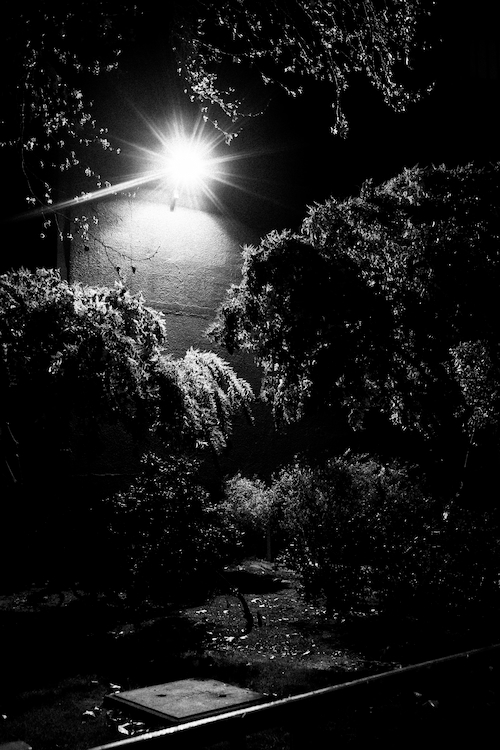
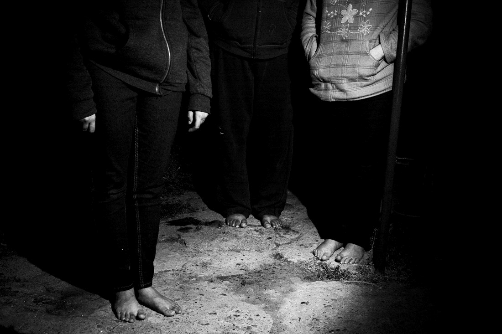

MIGRANTE
Migrante expresa el destino de mi familia y el mío, como un venezolano mas obligado a escaparse de la realidad de aquel país. Reflejo cómo nos ha afectado esto por medio de retratos, paisajes e imágenes de objetos, importantes para el relato. En la mezcla de todo esto evidencio nuestras vivencias familiares y la historia de la misma a través de la migración.

